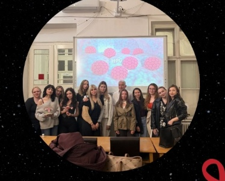
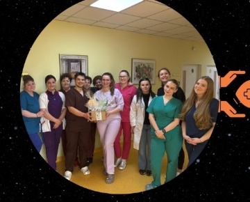
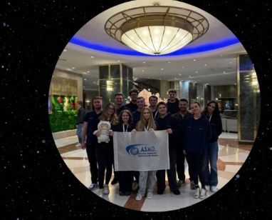
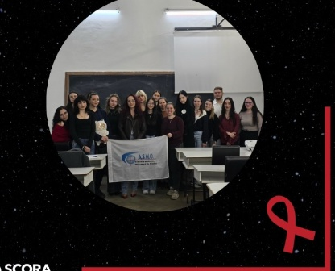
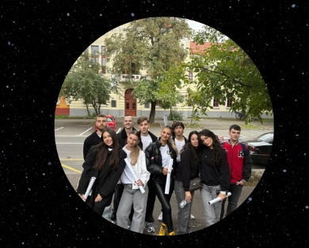

Proiectele & Campaniile ASMO Oradea
De la sălile de curs și amfiteatrele FMF Oradea până în secțiile spitalelor și în comunitate. Iată campaniile noastre active:

Workshop „Testul Babeș-Papanicolau”
Workshop practic dedicat prevenției cancerului de col uterin și interpretării modificărilor celulare cervicale în sistemul morfopatologic. Studenții mediciniști au deprins metodologia recoltării corecte a probei citologice prin exerciții hands-on pe mulaje, sub îndrumarea medicilor specialiști.

OncoEaster – Un Zâmbet pentru Pacienți
Inițiativă de solidaritate desfășurată pe secția de Oncologie a Spitalului Clinic Municipal „Dr. Gavril Curteanu” din Oradea. Voluntarii au pregătit ateliere și pachete speciale pentru pacienți și aparținători, aducând sprijin moral și clipe de căldură în preajma Sărbătorilor Pascale, alături de colectivul medical condus de dr. Platona Aniela și dr. Vlad Camelia.

Adunarea Generală LV FASMR – Delegația ASMO
Delegația asociației, formată din 13 ASMOnauți reprezentanți ai FMF Oradea, a luat parte la Adunarea Generală FASMR la București. Trei zile de plenare statutare, ateliere de lucru pe comitete permanente și consolidarea parteneriatelor naționale pentru drepturile studenților mediciniști din România.

Proiectul „Înseminarea In Vitro” (FIV)
Proiect educațional axat pe fertilizarea in vitro (FIV) ca metodă modernă de reproducere asistată, sub coordonarea doamnei doctor specialist obstetrică-ginecologie Zaha Ioana. Au fost aprofundate etapele procedurii, factorii clinici de succes și implicațiile etice, emoționale și sociale în practica ginecologică.

Săptămâna Bobocilor – Treasure Hunt
Aventura urbană din a doua zi a Săptămânii Bobocilor FMF Oradea. Boboceii mediciniști au explorat orașul în echipe, au rezolvat provocările pregătite de voluntarii seniori și au descoperit clădirile universitare, institutele clinice și reperele municipiului care le devine acasă pe parcursul facultății.
Repere din Activitatea Oficială ASMO
O privire cronologică asupra celor mai recente inițiative derulate de comitetele și diviziile noastre:
Workshop Practic „Testul Babeș-Papanicolau”
Sesiune de formare hands-on pe mulaje pentru recoltarea corectă a probei citologice cervicale, interpretarea clasificării morfopatologice și promovarea prevenției active a sănătății femeii.
Campania Umanitară „OncoEaster”
Desfășurată de Ziua Mondială a Sănătății la Spitalul Clinic Municipal „Dr. Gavril Curteanu”. Voluntarii au oferit sprijin moral și pachete de Paște pacienților de pe secția de Oncologie.
Cea de-a 55-a Adunare Generală FASMR (București)
Delegația formată din 13 ASMOnauți a reprezentat vocea studenților mediciniști orădeni în plenarele statutare ale federației naționale, consolidând proiectele comune cu centrele medicale partenere.
Curs & Conferință „Înseminarea In Vitro” (FIV)
Sesiune științifică dedicată tehnicilor de reproducere umană asistată medical, ghidată de dr. Zaha Ioana, explorând etapele embriologice, rata de succes și implicațiile bioetice clinice.
Săptămâna Bobocilor – Treasure Hunt
Aventura urbană prin municipiul Oradea pentru noii boboci mediciniști: probe interactive pe echipe, orientare universitară și integrare în comunitatea academică medicală.
Medici Îndrumători & Instituții Partenere
Proiectele noastre se desfășoară sub directa îndrumare a cadrelor medicale universitare și a spitalelor partenere din Oradea:
dr. Platona Aniela
Șef Secție Oncologie, Spitalul Clinic Municipal „Dr. Gavril Curteanu” Oradea. Sprijin deosebit acordat pentru desfășurarea campaniei OncoEaster.
SCOPH • OncoEasterdr. Vlad Camelia
Spitalul Clinic Municipal „Dr. Gavril Curteanu” Oradea. Suport direct acordat studenților voluntari în inițiativele dedicate sprijinului pacienților internați.
SCOPH • OncoEasterdr. Zaha Ioana
Facultatea de Medicină și Farmacie Oradea. Coordonator științific al conferinței și atelierului de educație în reproducere asistată „Înseminarea In Vitro”.
SCORA • Fertilizare In VitroÎntrebări Frecvente despre Evenimentele ASMO
Informații esențiale despre modul în care ne organizăm și desfășurăm proiectele:
Vezi povestea fiecărui eveniment pe Instagram
Toate galeriile foto, video-urile din culise și noutățile despre proiecte și congrese sunt publicate în timp real pe @asmo_oradea.
Deschide Instagram @asmo_oradea ↗